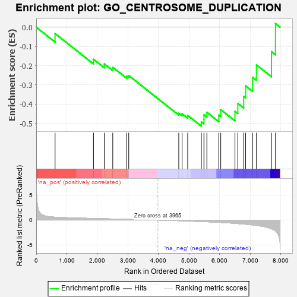
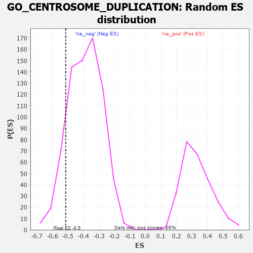

| | | Dataset | 7d |
| Phenotype | NoPhenotypeAvailable |
| Upregulated in class | na_neg |
| GeneSet | GO_CENTROSOME_DUPLICATION |
| Enrichment Score (ES) | -0.51439875 |
| Normalized Enrichment Score (NES) | -1.3188874 |
| Nominal p-value | 0.1263587 |
| FDR q-value | 0.4519227 |
| FWER p-Value | 1.0 |
Table: GSEA Results Summary

Fig 1: Enrichment plot: GO_CENTROSOME_DUPLICATION
Profile of the Running ES Score & Positions of GeneSet Members on the Rank Ordered List
| PROBE | GENE SYMBOL | GENE_TITLE | RANK IN GENE LIST | RANK METRIC SCORE | RUNNING ES | CORE ENRICHMENT | | 1 | NDC80 | | | 616 | 0.590 | -0.0333 | No |
| 2 | NUP62 | | | 1871 | 0.324 | -0.1668 | No |
| 3 | CDK2 | | | 2226 | 0.272 | -0.1909 | No |
| 4 | KAT2B | | | 2502 | 0.226 | -0.2086 | No |
| 5 | XPO1 | | | 2960 | 0.156 | -0.2544 | No |
| 6 | BRCA2 | | | 3024 | 0.146 | -0.2515 | No |
| 7 | CHMP3 | | | 4660 | -0.129 | -0.4475 | No |
| 8 | POC1A | | | 4768 | -0.151 | -0.4496 | No |
| 9 | CHMP5 | | | 4952 | -0.188 | -0.4585 | No |
| 10 | PLK4 | | | 5397 | -0.295 | -0.4923 | Yes |
| 11 | STIL | | | 5483 | -0.314 | -0.4795 | Yes |
| 12 | CEP76 | | | 5485 | -0.315 | -0.4561 | Yes |
| 13 | NDE1 | | | 5578 | -0.339 | -0.4422 | Yes |
| 14 | CENPJ | | | 5968 | -0.460 | -0.4567 | Yes |
| 15 | CKAP5 | | | 6032 | -0.482 | -0.4285 | Yes |
| 16 | RTTN | | | 6497 | -0.659 | -0.4375 | Yes |
| 17 | ALMS1 | | | 6590 | -0.704 | -0.3963 | Yes |
| 18 | C2CD3 | | | 6783 | -0.802 | -0.3603 | Yes |
| 19 | CEP72 | | | 6846 | -0.839 | -0.3052 | Yes |
| 20 | CETN1 | | | 7073 | -0.978 | -0.2604 | Yes |
| 21 | CETN2 | | | 7200 | -1.070 | -0.1961 | Yes |
| 22 | MDM1 | | | 7691 | -1.742 | -0.1273 | Yes |
| 23 | PKD2 | | | 7822 | -2.167 | 0.0187 | Yes |
Table: GSEA details [plain text format]

Fig 2: GO_CENTROSOME_DUPLICATION: Random ES distribution
Gene set null distribution of ES for GO_CENTROSOME_DUPLICATION